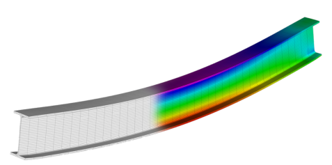

Sona yaklasirken 4'uncu seviye bukulme denklemleri (4th order bending equations) ve oge matrisleri konusunu biraz daha genisletmek istiyorum, hala sonlu ogeler (FEM) dunyasindayiz, oge matrisleri FEM yaklasiminin ogeleri ve tam matrisler.. Hatirlarsak makaskirisin her cubugu $A^T A$'nin bir parcasini veriyordu, ve bu parcalar birlestirilerek $K$ olusturuluyordu. Bir cizitte her kenar bir satira 1, -1 diye tekabul edecek sekilde bir matris ortaya cikartabiliyordu.. Simdi oge matrislerinin FEM ile iliskisini yakindan gormek istiyoruz. Bugunku dersin yarisi bu.
Dersin diger yarisi 4'uncu derece diferansiyel denklemler. Simdiye kadar gordugumuz tum diferansiyel denklemler ikinci derece idi, 4'uncu derece onemli denklemler var mi diye merak edenler olabilir, evet var. Kiris bukulmesi problemi bunlardan biri mesela, altta bu tur insaatlarda kullanilan turden bir kiris goruyoruz, resim bir stres analizi programindan alinmis, mavi, yesil, kirmizi renkler kiris uygulanan yukun etkilerini gosteriyor, kirmizi en fazla stres olan yerler mesela, iste alttaki turden ciktilar 4'uncu derece bukulme denklemini gerektiriyor.

[devam edecek]